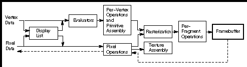

Appendix A
Order of Operations
This guide describes all the operations performed between the time vertices
are specified and when fragments are finally written into the framebuffer.
The chapters of this guide are arranged in an order that facilitates learning
rather than in the exact order in which these operations are actually performed.
Sometimes the exact order of operations doesn't matter - for example, surfaces
can be converted to polygons and then transformed, or transformed first
and then converted to polygons, with identical results - and different
implementations of OpenGL might do things differently. This appendix describes
a possible order; any implementation is required to give equivalent results.
If you want more details than are presented here, see the OpenGL Reference
Manual.
This appendix has the following major sections:
"Overview"
"Geometric Operations"
"Pixel Operations"
"Fragment Operations"
"Odds and Ends"
Overview
This section gives an overview of the order of operations, as shown in
Figure A-1 . Geometric data (vertices, lines, and polygons) follows the
path through the row of boxes that includes evaluators and per-vertex operations,
while pixel data (pixels, images, and bitmaps) is treated differently for
part of the process. Both types of data undergo the rasterization and per-fragment
operations before the final pixel data is written into the framebuffer.

Figure A-1 : Order of Operations
All data, whether it describes geometry or pixels, can be saved in a
display list or processed immediately. When a display list is executed,
the data is sent from the display list just as if it were sent by the application.
All geometric primitives are eventually described by vertices. If evaluators
are used, that data is converted to vertices and treated as vertices from
then on. Per-vertex calculations are performed on each vertex, followed
by rasterization to fragments. For pixel data, pixel operations are performed,
and the results are either stored in the texture memory, used for polygon
stippling, or rasterized to fragments.
Finally, the fragments are subjected to a series of per-fragment operations,
after which the final pixel values are drawn into the framebuffer.
Geometric Operations
Geometric data, whether it comes from a display list, an evaluator, the
vertices of a rectangle, or as raw data, consists of a set of vertices
and the type of primitive it describes (a vertex, line, or polygon). Vertex
data includes not only the (x, y, z, w) coordinates, but also a
normal vector, texture coordinates, a color or index, and edge-flag data.
All these elements except the vertex's coordinates can be specified in
any order, and default values exist as well. As soon as the vertex command
glVertex*() is issued, the components are padded, if necessary,
to four dimensions (using z = 0 and w = 1), and the current
values of all the elements are associated with the vertex. The complete
set of vertex data is then processed.
Per-Vertex Operations
In the per-vertex operations stage of processing, each vertex's spatial
coordinates are transformed by the modelview matrix, while the normal vector
is transformed by that matrix's inverse and renormalized if specified.
If automatic texture generation is enabled, new texture coordinates are
generated from the transformed vertex coordinates, and they replace the
vertex's old texture coordinates. The texture coordinates are then transformed
by the current texture matrix and passed on to the primitive assembly step.
Meanwhile, the lighting calculations, if enabled, are performed using
the transformed vertex and normal vector coordinates, and the current material,
lights, and lighting model. These calculations generate new colors or indices
that are clamped or masked to the appropriate range and passed on to the
primitive assembly step.
Primitive Assembly
Primitive assembly differs, depending on whether the primitive is a point,
a line, or a polygon. If flat shading is enabled, the colors or indices
of all the vertices in a line or polygon are set to the same value. If
special clipping planes are defined and enabled, they're used to clip primitives
of all three types. (The clipping-plane equations are transformed by the
inverse of the modelview matrix when they're specified.) Point clipping
simply passes or rejects vertices; line or polygon clipping can add additional
vertices depending on how the line or polygon is clipped. After this clipping,
the spatial coordinates of each vertex are transformed by the projection
matrix, and the results are clipped against the standard viewing planes
x = ± w, y = ± w, and z = ± w.
If selection is enabled, any primitive not eliminated by clipping generates
a selection-hit report, and no further processing is performed. Without
selection, perspective division by w occurs and the viewport and
depth-range operations are applied. Also, if the primitive is a polygon,
it's then subjected to a culling test (if culling is enabled). A polygon
might convert to vertices or lines, depending on the polygon mode.
Finally, points, lines, and polygons are rasterized to fragments, taking
into account polygon or line stipples, line width, and point size. Rasterization
involves determining which squares of an integer grid in window coordinates
are occupied by the primitive. Color and depth values are also assigned
to each such square.
Pixel Operations
Pixels from host memory are first unpacked into the proper number of components.
The OpenGL unpacking facility handles a number of different formats. Next,
the data is scaled, biased, and processed using a pixel map. The results
are clamped to an appropriate range depending on the data type, and then
either written in the texture memory for use in texture mapping or rasterized
to fragments.
If pixel data is read from the framebuffer, pixel-transfer operations
(scale, bias, mapping, and clamping) are performed. The results are packed
into an appropriate format and then returned to processor memory.
The pixel copy operation is similar to a combination of the unpacking
and transfer operations, except that packing and unpacking is unnecessary,
and only a single pass is made through the transfer operations before the
data is written back into the framebuffer.
Fragment Operations
If texturing is enabled, a texel is generated from texture memory for each
fragment and applied to the fragment. Then fog calculations are performed,
if they're enabled, followed by coverage (antialiasing) calculations if
antialiasing is enabled.
Next comes scissoring, followed by the alpha test (in RGBA mode only),
the stencil test, the depth-buffer test, and dithering. All of these operations
can be disabled. Next, if in index mode, a logical operation is applied
if one has been specified. If in RGBA mode, blending is performed.
The fragment is then masked by a color mask or an index mask, depending
on the mode, and drawn into the appropriate buffer. If fragments are being
written into the stencil or depth buffer, masking occurs after the stencil
and depth tests, and the results are drawn into the framebuffer without
performing the blending, dithering, or logical operation.
Odds and Ends
Matrix operations deal with the current matrix stack, which can be the
modelview, the projection, or the texture matrix stack. The commands glMultMatrix*(),
glLoadMatrix*(), and glLoadIdentity() are applied to the
top matrix on the stack, while glTranslate*(), glRotate*(),
glScale*(), glOrtho(), and glFrustum() are used to
create a matrix that's multiplied by the top matrix. When the modelview
matrix is modified, its inverse is also generated for normal vector transformation.
The commands that set the current raster position are treated exactly
like a vertex command up until when rasterization would occur. At this
point, the value is saved and is used in the rasterization of pixel data.
The various glClear() commands bypass all operations except scissoring,
dithering, and writemasking.
[Previous chapter] [Next
chapter]
See the About page for copyright, authoring
and distribution information.